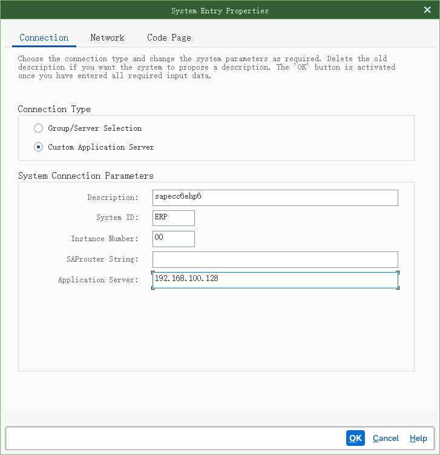
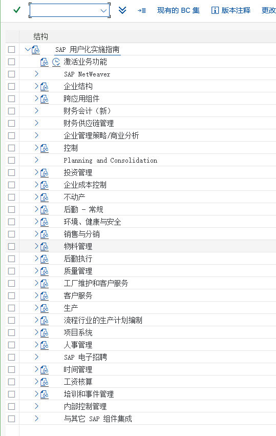

準備作業 — システムへのログオンと IMG 設定への移動
準備作業 · クライアントログオン · SPRO の IMG 設定入口
1. 本モジュールのガイド
サイト全体の最初のステップは、SAP GUI をシステムに接続し、設定用の IMG 設定（SPRO）を開くことです。以降の FI / CO / MM / PP / SD の 5 モジュールの設定はすべて、この IMG 設定の中で「IMG パス」をたどって階層ごとに行います。
教材環境は中国語インターフェースの S/4HANA 一式です（会社コード C999、会社名 頤寧機械有限公司、プラント F999、品目は T999-100 / R999-100 / F999-100 など）。これらは原教材ドキュメントの著者のシステムでの設定値であり、ご自身のシステムの番号範囲や組織構造と同じとは限りません —— 手順の「操作順序」はそのまま実行できますが、具体的な値はご自身のシステムに合わせて入力してください。
- クライアントのアイコンとログオン画面（システム／クライアント／ユーザ／パスワード／言語）
- SPRO（IMG 設定）の入口：トランザクションコード
SPRO→ SAP リファレンス IMG → 各モジュールのメニューツリー - 当サイトでは「IMG 設定」と「業務処理」を分けて表記しています：IMG 設定 ＝ IMG カスタマイジング、業務処理 ＝ 日常の業務トランザクション
2. タスク目次（2 件）
そのうち 0 件のタスクで、原教材ドキュメントの IMG 設定メニューパスが示されています；IMG 設定 のマークが付いているのはカスタマイジング（設定）タスク、業務処理 と付いているのは日常業務の操作タスクです。表示がないタスクは原文でも明示されておらず、タスク名からご自身で判断してください（一般に「～の定義／～パラメータのメンテナンス」＝ IMG 設定、「伝票・指図・請求書の登録／入力／照会」＝業務処理）。
3. 手順（タスクごと）
システムにログオン
3 画面 / 3 ステップ原語（中国語）
-
SAP Client 側のアイコンは次のとおりです
SAP Gui をダブルクリックすると、次の画面が表示されます：原文
SAP Client 端的图标如下
双击 SAP Gui，弹出如下页面：
画面 1image2.png · 590×580 -
「ログオン」をクリックすると、次の画面が表示されます：
原文
点击登陆，弹出如下页面：
画面 2image3.png · 431×309 教材ノートGUI の設定は次のとおり -
前の画面に続けて操作します（画面 3）

画面 3image4.png · 727×751
{kind=link}
IMG 設定へ進む
2 画面 / 2 ステップ原語（中国語）
-

画面 4image5.png · 587×134 -
システムにログオンすると、次の画面のとおり
トランザクションコードに spro を入力し、IMG 設定の画面に進みます原文
进入系统后，如下页面所示
在事务代码处输入 spro，进入后台配置页面
画面 5image6.png · 539×850
{kind=link}
4. スクリーンショットと設定値について
S4.docx の著者が実システムでキャプチャした中国語インターフェースの画面です（元のファイル名 imageNNN.png は各図の図注に残しているので、Word の原文と 1 枚ずつ照合できます）。当サイトはこれらの画面を一切描き直したり、シミュレーションで再現したりしていません。C999、会社名「頤寧機械有限公司」、プラント F999、品目 R999-100/T999-100/F999-100、得意先 K001/K002 など）はすべて原作者の教材環境のものです。手順どおりに作業するときは、操作の順序と設定ポイントはそのまま流用できますが、具体的な番号や名称はご自身のシステムの値に置き換えてください；ドキュメントと異なるメッセージが出た場合は、まず「トラブルシューティングと注意点」ページで原教材ドキュメントに記録された同種の問題を確認してください。